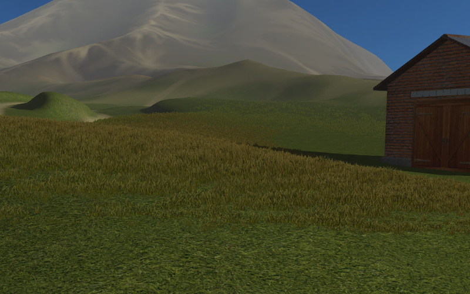

Particle System. Instancing¶
Table of Contents
A particle system can be used to create multiple object copies (so called instancing). This technique simplifies scene authoring and also reduces loading time and memory consumption as compared to the using of single objects.

Using particle systems for instancing has some limitations though:
- Movement and animation of objects inside a particle system is not allowed.
- Parenting is not possible among the objects inside a particle system, except for dupli-groups.
- Instancing of non-mesh objects is not possible.
Particle System Setup¶

Activation¶
- Create a particle system of the
Hairtype on the emitter. - On the
Renderpanel select theObject(or theGroup) rendering type. - In the
Dupli Objectfield (or in theDupli Groupfield) select the object (or the object group) for instancing. Both local and linked objects (or groups) are supported.
Recommended Additional Settings
- In order to display correct sizes in the viewport, set the
Emission > Hair LengthandRender > Sizeparameters to 1.0.
{kind=link}
Display settings¶
Render > Use Count
The option is available for groups of particle objects. When enabled, the interface for setting the relative number of objects in a group becomes visible. The engine does not reproduce the exact positions of objects of certain types.
Render > Randomize Location and Size
The option enables randomization for the location and the size of the objects. If enabled, the engine generates random coordinates and size (limited to the ±25% range) for the particle objects. If disabled, the exact coordinates and sizes of the particle objects are exported and used.
Render > Randomize Initial Rotation
This option randomizes rotation of the objects relative to the axis defined byRotation Type. If enabled, the engine generates random rotation angles for the particle objects. If disabled, the rotation is taken from theRotationpanel.
Render > Rotation Type
An Axis of random object rotation (the property is available when
Render > Randomize Initial Rotationis enabled). There are two options:
Z axis- the objects are turned randomly around the vertical Z axisRandom axis- the objects are turned randomly around a random axisThe default is
Z axis
Render > Rotation Strength
Coefficient which defines the range of random rotation angles - counting from the direction towards the camera. Available when the
Render > Randomize Initial Rotationcheckbox is enabled. Examples:
Rotation Strength = 1- the angles will lie within the \([-\pi, \pi]\) rangeRotation Strength = 0.5- the angles will lie within the \([-0.5 \cdot \pi, 0.5 \cdot \pi]\) rangeRotation Strength = 0.1- the angles will lie within the \([-0.1 \cdot \pi, 0.1 \cdot \pi]\) rangeThe default value is 1.
Render > Billboard
Enables billboarding for particles. Disabled by default.
Render > Billboard Type
Billboarding type. The option is available when the
Render > Billboardoption is enabled. Three types are available:
Basic- simple one-sided billboarding: particles will be turned with their front to the observerRandom-Random- random two-sided billboarding: particles will be more often turned with their front or rear to the observer and less often with their side; also there will be a small random turn; this model is designed specially for grass instancingJittered-Jittered- one-sided billboarding with particles wavering along the plane which is turned to the observer; this model is designed specially for instancing of tree leavesThe default is
Basic.
Render > Jitter Amplitude
Coefficient which defines the particle oscillation amplitude. Available when theJitteredtype is selected from theRender > Billboard Typemenu. The bigger this parameter is, the bigger is the oscillation amplitude. The default value is 0.
Render > Jitter Frequency
Particle oscillation frequency in hertz. Available when theJitteredtype is selected from theRender > Billboard Typemenu. The default value is 0.
Render > Billboard Geometry
Billboard rotation type (the option is available when the
Render > Billboardcheckbox is set). Two types are available:
Spherical- spherical billboarding i.e. particles are fully oriented to the observer and their rotation is unlimited;Cylindrical- cylindrical billboarding i.e. particles are rotating only around the vertical Z axis;The default is
Spherical.
Dynamic grass setup¶
Dynamic Grass
The option enables the dynamic grass rendering mode. Disabled by default.
Dynamic Grass > Scale Threshold
Minimum size for dynamic grass particles. Smaller particles will not be rendered. The option is available ifDynamic Grassis enabled.
Inheritance settings¶
Properties Inheritance > Wind Bending
Inheriting the
Wind Bendingsettings by the particles:
Parent- inherited from the emitterInstance- inherited from the particle object itselfThe default is
Parent.
Properties Inheritance > Shadows
Inheriting the shadow settings by particles:
Parent- inherited from the emitterInstance- inherited from the particle object itselfThe default is
Parent.
Properties Inheritance > Reflection
Inheriting the reflection settings by particles:
Parent- inherited from the emitterInstance- inherited from the particle object itselfThe default is
Parent.
Properties Inheritance > Vertex Color
Inheriting the vertex color from the emitter. Contains two fields:
From- the emitter’s existing vertex color nameTo- the particle’s existing vertex color nameThere is no inheritance by default.
Grass¶
Instancing of objects can be used for visualizing vast grass. In this case grass is rendered near the camera when it moves through the landscape.
{kind=link}
Activation
- On a separate plane object create a particle system for object instancing. Enable the
Dynamic Grassoption. - Enable the
Terrain Dynamic Grassoption for the supposed landscape material.
Setup
It is recommended to create a few planes (for example 3) with sizes corresponding to the desired grass cascades (e.g. 100, 150 and 250 meters).
For the landscape’s material, the following text fields become active when the Terrain Dynamic Grass option is enabled:
- Dynamic Grass Size (R)
- Vertex color layer name of the landscape mesh which is intended for modifying the grass size. The size (i.e. height) of the grass is defined by gray tints - the brighter color the is the higher is the grass.
- Dynamic Grass Color (RGB)
- Name of the landscape mesh’s vertex color layer which is intended for grass tinting. The vertex color is multiplied by the grass material color. The
Influence > Blendparameter for the grass material’s diffuse texture should have theMultiplyvalue.
Vertex color layers with such names should exist in the landscape mesh.
It is also recommended to disable rendering of the emitter (the Render > Emitter option).
{kind=link}
Tree Leaves¶
Instancing suits the rendering of tree leaves well and allows to get a better level of detail.
{kind=link}
Activation
Performed as described in the Particle system setup -> Activation section (see above). In this case the tree is the emitter and the leaves and the small branches are the particles.
Additionally, the following operations can be performed for the emitter:
- create a vertex group which includes vertices on which the particles will be placed
- create a vertex color layer for the wind bending parameters of the tree and the leaves
- create a vertex color layer to be inherited by the particles (for example it can be used for tinting the particles)
Setup
- Random rotation settings
If the Initial Random Rotation checkbox is enabled, it is recommended to select the vertical axis for random rotation - Z axis (by using the Rotation Type menu). The Rotation Strength value can be set at will.
- Billboarding settings
It is recommended to enable billboarding, to set its type as Jittered (by using the Render > Billboard Type menu) and to make it spherical - Spherical (by using the Render > Billboard Geometry menu). The Render > Jitter Amplitude and Render > Jitter Frequency values can be set at will.
- Particle position settings
It is recommended to select the Verts value from the Emission > Emit From menu, and to select the emitter’s vertex group (in the Vertex Group > Density field) which defines the positions of particles. Note, that the Render > Randomize Location and Size checkbox should be disabled.
- Wind effect settings
It is recommended to enable inheritance settings from the emitter - select the Parent in the Properties Inheritance > Wind Bending menu. Then for the emitter on the Object panel enable the Wind Bending checkbox and set up the bending parameters. For a tree, it is enough to specify the Wind Bending > Main Bending > Angle and Wind Bending > Main Bending > Frequency parameters and also a vertex color name for bending in the Wind Bending > Main Bending > Main Stiffness field.
- Vertex color inheritance settings
For the emitter’s vertex color to be inherited by the particles, it is required to specify both the emitter’s vertex color name and the particle’s vertex color name in the Properties Inheritance > Vertex Color > From and Properties Inheritance > Vertex Color > To fields respectively. As a result, the color of the emitter’s vertex that is closest to the particle (specified in the From field) will be copied and propagated into the particle’s To vertex color layer.
The resulting vertex color layer with the name specified in the Properties Inheritance > Vertex Color > To field can be used in the particle’s node material for its tinting and for any other effects.
- Setting up the size of particles via vertex group weights
In order to create dependency between the size of particles and vertex group weights, select the name of the desired vertex group in the Vertex groups > Length field.
The influence can be tweaked by setting weights in the selected vertex group.